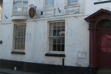

The Penzance Town Trail
If you want to explore the town, you can't do better than to follow the Penzance Town Trail. This takes you on a circular route through the town, tracing its story through buildings and historical remains, rounds and medieval crosses, churches, chapels, farm towns and shops.
There is a guidebook which describes the 16 way markers.
The Penzance Town Trail Guidebooks are available from the Tourist Information Centre.
No. 1 - St. John's HallThe foundation stone of St. John's hall was laid on the 10th September, and three years later Penzance could boast the largest granite building in Britain. Over the years it has housed everything from the Police, Freemasons and a natural history museum. Nowadays St. Johns Hall is used as an events & meeting space, public fares & starting point for the Mazey Parades. |
No. 2 - The Cattle MarketPenzance was once referred to as 'Marghas Yow' in Cornish or Thursday market. This market drew in much trade from the surrounding villages & towns helping Penzance prosper. This area has also housed the town reservoir as well as one of the only surviving water chute in the town. A restored gas lamp post can be seen at the top of Causeway Head. |
No. 3 - The Savoy CinemaThe Savoy cinema opened in 1912 and is the oldest continually running cinema in the British Isles. Previous to the cinema the building housed the Victoria Hall & Auditorium. Today the cinema shows the latest Hollywood blockbusters along side the finest in local and independent films. |
No. 4 - The Green MarketStanding in the green market you can see examples of many architectural styles that have been used throughout the streets of Penzance. The stone cross that now stands outside Penlee House was once located in the green market. |
No. 5- Humphry Davy Statue & Market HouseThe Market House opened in 1838 and was the civic centre of Penzance until the construction of St. Johns Hall. Standing in front of the building is Sir. Humphry Davy, the towns most famous Son. Davy played a large part in the local mining community when he invented the mining safety lamp. He is considered to be one of the greatest British chemists. |
No. 6 - The Union HotelDuring the 1700's Chapel street was the hub of the town. The Union Hotel once housed a Georgian theatre and the Assembly Rooms, reserved for Penzance's gentry. The news of Lord Nelson's death was first announced from the balcony in the Assembly Rooms. Chapel Street also houses the new Egyptian House and the new Exchange Gallery just around the corner. |

No. 7 - The Georgian House HotelThis building is said to be haunted by a Mrs. Baines after a horrifying murder. Many other buildings in Chapel Street has ghosts residing within them as it's Penzance's oldest street. Today there are a number of restaurants, antique and art galleries sitting along side plenty of shopping and photograph opportunities. |
No. 8 - The Lifeboat HouseThe Lifeboat House, sitting at the base of Abbey Slip, was opened in Feb 1885. The first boat to be housed here was a 8 oared 'Dora'. Due to problems launching the lifeboat house was moved to Mousehole and onto Newlyn. In 1803, Penzance was given the first lifeboat in Cornwall, however it was sold 9 years later to pay off its debts. |
|
No. 9 - The Dolphin Inn & the QuayThe Dolphin has been on this spot for 300 years and as such has many claims to fame. The HQ of Sir John Hopkins, First Tobacco Smoked in Britain & Judge Jeffreys, the 'hanging judge'. The quay is crucial to the maritime traditions that Penzance has, and is worth a walk to the end of the pier for some of the best views of Mount's Bay. |
No. 10 - Jubilee PoolJubilee Pool was designed in the early 1930s by Captain F Latham, and opened with great celebration in May 1935, the year of King George V's Silver Jubilee. The pool is open every summer from the end of May to early September, providing a fabulous venue for swimming, sunbathing or simply relaxing by the pool side. |
No. 11 - St. Mary's Church YardSt. Mary's Church overlooks the 'Holy Headland' which gives Penzance it's names sake. It stands on the grounds of the Chapel of St. Anthony. The present church was built in 1833-5, and opened on 15th November 1835. It was consecrated by the Bishop of Exeter in 1836. The architect, Charles Hutchens was a native of St Buryan. |
No. 12 - Regent SquareThe 21 houses the make up Regent Square were built in the 1830's. These beautiful houses were once home to popular artists, merchants, clergy men and notable town's people. The few streets surrounding Regent Square contain some of the most architecturally stunning houses in Penzance, and is worth taking ten minutes to explore. |
No. 13 - Morrab Sub Tropical GardensMorrab Gardens started out as the property of wealthy brewer, Samuel Pidwell, before being purchased by the town council in 1889. The gardens are famous for it's collection of sub-tropical and rare plants and is one of the nicest places to be in Penzance on a hot summers day |
No. 14 - Penzance PromenadeThe original promenade was built in 1844 to protect the development of the western end of Penzance. Today the 1 Km promenade is the only one in Cornwall. Its main function, besides pleasure reasons, is costal defence. During the winter months the road is sometimes closed for safety reasons, as the waves crash over the promenade & the road before hitting the houses opposite. |
No. 15 - Penlee House & Art GalleryPenlee House was originally built in 1865 a the home of the wealthy Branwell family. The house & surrounding park was purchased by the Penzance Borough council in 1946 and opened in 1949 as a museum. The gallery is home to many paintings by members of the Newlyn School, including Stanhope Forbes, Norman Garstin,Walter Langley and Lamorna Birch. |
No. 16 - The Penzance Art SchoolThe Art school, situated at the top of Morrab Road, was built in 1880 for the growing Penzance Art Community. Silvanus Trevail designed the building, and used Lamorna Granite. In 1888 an exhibition hall was added, which later became the Penzance Public Library.
|